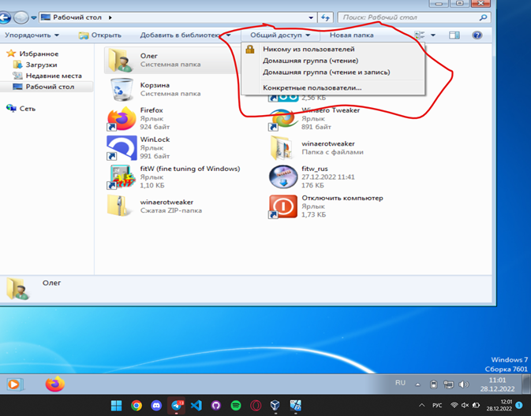

В составе Windows есть инструменты для ограничения доступа, но они не слишком удобны, причем в самых заурядных ситуациях. Достаточно упомянуть такие простые примеры, как установка пароля на директорию или запрет на открытие Панели управления.
Общий доступ
Можно отметить, что в Windows 8, по сравнению с предшествующей ей Windows 7, был усовершенствован родительский контроль. Сейчас с ним можно ознакомиться в разделе «Семейная безопасность» Панели управления. Фильтр имеет следующие возможности:
Из перечисленного ясно, что даже эти функции помогут администратору компьютера решить многие частные моменты, но далеко не все.
Вывод
Встроенные функции Windows не покрывают всех потребностей пользователя. Так же как и WinGuard предоставляет не большой функционал, но достаточно простой и понятный интерфейс для пользователя. Но, мой выбор падает на программу WinLock из за большого функционала и при этом понятного интерфейса. Программа предоставляет в разы большее, чем аналоги, с которыми она сравнивается мной. Она единственная их 3-х позволяет работать с сетью, а так же очень гибко работает по остальным пунктам, которые в ней представлены.